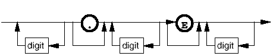
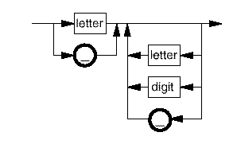
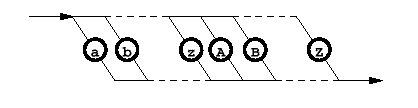
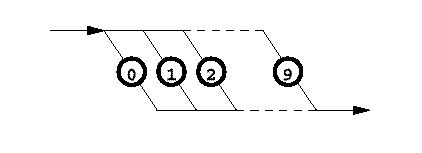

Common Syntax Elements
This section defines common syntax elements used in the rest of the syntax section.
number

identifier

letter

digit

end_of_line_marker
A new line character or an end of file marker.
#comment
A # character followed by all characters up to but not including end_of_line_marker.
#comment may be placed at the end of any line.
You may also place a #comment on a line on its own with any number (including zero) spaces or tabs in front of it.
comment
All characters up to but not including end_of_line_marker.
Note Comments are referenced many times throughout
the syntax graphs. Generally, comment is shown instead of #comment where a fixed number of
parameters appear on a line and it is obvious that the remaining characters constitute a
comment. On lines containing a variable (unknown) number of parameters, #comment is used
instead.
blank_line
An empty line. This is not actually shown in any of the syntax graphs, but blank lines are allowed at any point in any of the Equation Based Testing components.
Functional changes
- Introduced before SmarTest 6.3.2